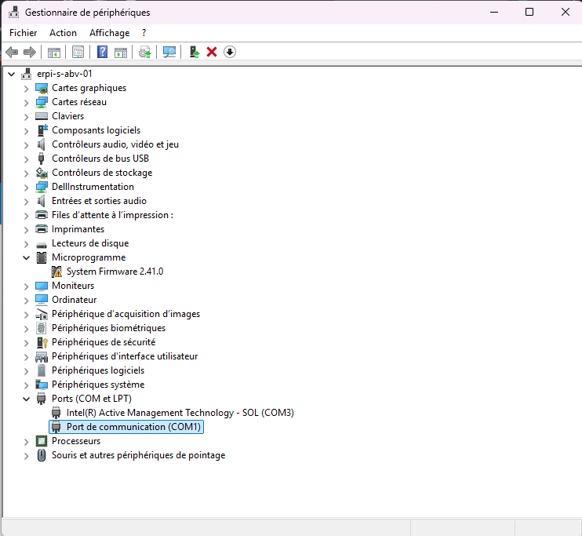

Tutorial
⚙️ Installer le logiciel Arduino (IDE)
- Va sur le site officiel : https://www.arduino.cc/en/software
- Télécharge la version pour Windows, Mac ou Linux selon ton ordinateur.
- Installe le logiciel (suis les étapes par défaut et accepte les drivers quand on te le propose).
- Ouvre le logiciel Arduino.
Tutorial
Retour: Installation Arduino
Suivant: Installer le driver CH340
🔌 Connecter la carte Arduino
- Branche la carte Arduino à ton ordinateur avec un câble USB.
- Dans le logiciel Arduino :
- Va dans Outils > Type de carte et choisis Arduino Nano.
- Ensuite, dans Outils > Port, choisis le port COM qui correspond à ta carte (ex : COM3).
❓ Comment trouver le bon port COM avec le gestionnaire de périphériques ?
- Appuie sur les touches Windows + X et clique sur Gestionnaire de périphériques.
- Dans la fenêtre qui s’ouvre, déroule la section Ports (COM et LPT).
- Branche la carte Arduino si ce n’est pas encore fait.
- Observe quel nouveau périphérique apparaît dans la liste, souvent nommé USB-SERIAL CH340 ou Arduino.
- Le nom contiendra le numéro du port COM (ex : COM3). C’est celui-là que tu dois choisir dans le logiciel Arduino.
Voici un exemple :

Explication
🧩 Pourquoi installer le driver CH340 ?
Pour les clones Arduino, il faut installer le driver CH340 si la carte n’est pas détectée.
- Windows : télécharger ici
- Mac : driver GitHub
Tutorial
🧱 Installer les bibliothèques nécessaires
Pour utiliser un servomoteur :
- Va dans le menu **Croquis > Inclure une bibliothèque > Gérer les bibliothèques...**
- Recherche **Servo** et installe la bibliothèque officielle "Servo" d’Arduino.
Reference
Retour: Bibliothèques
Suivant: Connexion des composants
🔧 Matériel nécessaire pour le projet
Liste des composants nécessaires pour le projet Arduino (débutant) :
| Élément | Quantité | Notes importantes |
|---|---|---|
| Carte Arduino Nano | 1 | Compatible avec le logiciel Arduino |
| Câble USB-A vers USB-B | 1 | Pour connecter l’Arduino à l’ordinateur |
| Breadboard (plaque d’essai) | 1 | Pour connecter facilement les composants |
| Câbles Dupont (Mâle-Mâle) | ~20 | Pour relier la carte et la breadboard |
| LED | 1 | Pour allumer une lumière |
| Résistance 220 ohms | 1 | Pour protéger la LED |
| Bouton-poussoir | 1 | Sert à déclencher l’action |
| Résistance 10k ohms | 1 | Pull-down pour le bouton |
| 2 moteurs DC | 2 | Petits moteurs 5V |
| Module L298N (driver de moteur) | 1 | Nécessaire pour contrôler les moteurs DC |
| Servomotor MG995 | 1 | Petit servomoteur 5V |
| 2x Pile lithium 3.7V | 1 | Alimente les moteurs sans l’ordi |
| Alimentation (optionnel) | 1 | Peut être via un bloc de piles AA 6x1.5V aussi |
Hardware
✅ Moteurs DC via
⚡ Connexion des composants
✅ LED
- + (longue patte) → résistance 220 ohms → D2 (Arduino)
- – (courte patte) → GND (Arduino)
✅ Bouton
- Une patte → 5V
- Autre patte → D3 (Arduino) + résistance 10kΩ vers GND
✅ Servomoteur SG90
- Marron → GND
- Rouge → 5V
- Orange → D9
✅ Moteurs DC via L298N
- IN1 → D5
- IN2 → D6
- ENA/ENB → reliés à 5V
- GND du L298N → GND Arduino
- Alimentation du L298N : pile 9V dans le connecteur VIN du module
🔋 À propos de l'alimentation
- L’Arduino seul peut être alimenté par USB
- Pour alimenter les moteurs DC : pile 9V ou pack de piles AA (6x1.5V)
- Toujours connecter les masses (GND) entre l’Arduino et le module L298N
Code
💻 Programmer un exemple simple
Ouvre l'IDE Arduino et colle ce code :
✔️ Ce code fait clignoter une LED, active un moteur et fait tourner le servomoteur quand tu appuies sur le bouton.
/*
Ce programme permet de contrôler un système composé d’un bouton, une LED, un servomoteur et deux moteurs.
Lorsqu’on appuie sur le bouton :
- La LED s’allume
- Le moteur tourne dans un sens
- Le servomoteur se positionne à 90°
Après une courte pause :
- La LED s’éteint
- Les moteurs s’arrêtent
- Le servomoteur revient à sa position initiale (0°)
*/
// On inclut la bibliothèque pour contrôler le servomoteur
#include // Permet d’utiliser les fonctions .attach() et .write() pour piloter le servomoteur
// --- Déclaration des objets et variables ---
Servo monServo; // Création de l’objet "monServo" pour contrôler le servomoteur
int bouton = 3; // Le bouton-poussoir est connecté à la broche numérique D3
int led = 2; // La LED est connectée à la broche numérique D2
int moteur1 = 5; // Le moteur 1 est contrôlé via la broche D5 (IN1 du module L298N)
int moteur2 = 6; // Le moteur 2 est contrôlé via la broche D6 (IN2 du module L298N)
void setup() {
pinMode(bouton, INPUT); // Définit la broche du bouton comme une entrée (INPUT)
pinMode(led, OUTPUT); // Définit la broche de la LED comme une sortie (OUTPUT)
pinMode(moteur1, OUTPUT); // Définit la broche du moteur 1 comme une sortie
pinMode(moteur2, OUTPUT); // Définit la broche du moteur 2 comme une sortie
monServo.attach(9); // Connecte le servomoteur à la broche D9
}
void loop() {
if (digitalRead(bouton) == HIGH) { // Si le bouton est appuyé (état HAUT)
digitalWrite(led, HIGH); // Allume la LED
digitalWrite(moteur1, HIGH); // Active le moteur 1
digitalWrite(moteur2, LOW); // Assure que le moteur tourne dans un seul sens
monServo.write(90); // Fait tourner le servomoteur à 90 degrés
delay(1000); // Attend pendant 1 seconde (1000 millisecondes)
digitalWrite(led, LOW); // Éteint la LED
digitalWrite(moteur1, LOW); // Arrête le moteur 1
digitalWrite(moteur2, LOW); // Arrête le moteur 2
monServo.write(0); // Ramène le servomoteur à 0 degré (position initiale)
}
}